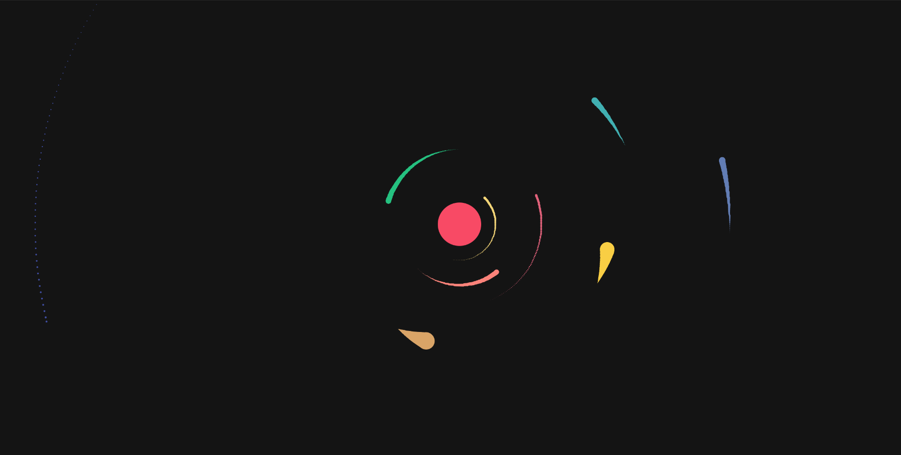
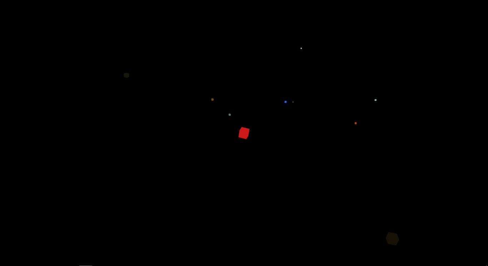
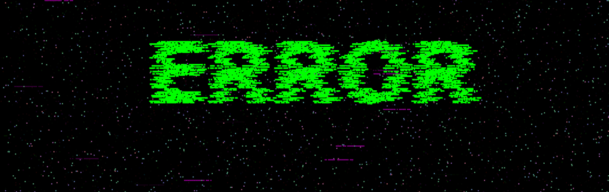

Projects
Thank you for stopping by my Project.
Please take a look around and explore my Project.
Feel free to get in touch if you have any questions,
or would like to learn more.
-

Solar
A demonstration of soloar system using processing 5 and P5.js.
Project Page
-
OpenGL Solar System
An OpenGL Program that has been written to display a cubic solar system in
a similar proportion of size and movement of the realistic Solar system.
Inspired from previous project Solar
Project Page

-

Text Glitch
A Terminal like Glitch text image creator,
based on SVG & Canvas from html5.
Project Page
-
Rune Generator
The simple project for generating pseudorandom Runes
Project Page
-
Magic Circle
A Magic Circle generator,
Inspired from the previous project: Rune Generator
Project Page
-
The "Mug"
Inspired from the mug of Ubisoft that has a failure when production.
Made in Blender 2.8
-
A 3D Scene
This is a Cave Scene made in Blender 2.8,
with volumetric light and sculpting tool.
-
Water(Milk) Simulation
A liquid animation made in blender 2.8,
with environmental lighting.